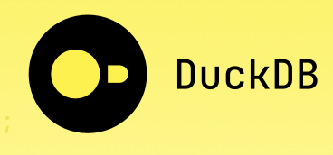

# loading function with column selection
loadTableA = function(path = "./dir1/datafile.parquet",
columns = NULL) {
arrow::read_parquet(file = path,
col_select = columns)
}Abstract
In this bog I’ll show you how you can use duckdb in R to set up an entry point to query all your parquet-files in one environment without copying the original data by creating a view to these parquet-files.
This avoids the problem of finding the correct files in your storage-system. For some people it might be easier to use SQL queries to get results from your data instead of using R (dplyr, data.table etc.)
Motivation
Setup
During your work on projects or in the data science department of a corporation you collect a lot of data form several data sources, different applications, different data bases etc.
In order to achieve your goals you will have to combine informations from several data sources, e.g. join tables, add informations and so on.
I assume it takes too long to load these data from the different sources in raw form and transform them in order to be able to work with them. So what you have done is:
you downloaded your data
you transformed your data in the way that suits your needs (e.g. convert all dates to the same format, filled in missing values, omitted rows that aren’t necessary for your work and so on)
you saved your data on disk preferably in a data format that is made for data analysis (e.g. the parquet-format)
Sometimes you save your data in files with suffixes for month and years.
Maybe you have made yourself a special table with informations that aren’t in any tables of your applications, but are none the less useful/needed for your analysis or presentation of the data. Think of a classification-information of your products where for analysis A it has to be in category 1 and for analysis B it has to be in category 2.
Over times you accumulated a lot of files in different locations on disk and with some luck you can still tell where to find the data files.
What probably happened
Note
At least, this is what I did.
You have built loading functions for each type of file that you use.
If it is just one big data file or several parquet files in a directory or with partitioning you can just hard code the path of the data into the loading function.
Note
If you use the open_dataset-function of the arrow-Package (see https://arrow.apache.org/docs/r/reference/open_dataset.html) you can even combine row filtering features with your loading-function.
For a detailed explanation of what you can do with the{arrow} package please see
Richardson N, Cook I, Crane N, Dunnington D, Fran<U+00E7>ois R, Keane J, Mecum B, Moldovan-Gr<U+00FC>nfeld D, Ooms J, Wujciak-Jens J, Apache Arrow (2026). arrow: Integration to ‘Apache’ ‘Arrow’. R package version 24.0.0, https://github.com/apache/arrow/.
If you saved your files in different locations depending on certain conditions e.g. the month and year you generated the data you probably combined the solution above with a file finding function.
# function to find a file
findFileTableA = function(month = month(Sys.Date()),
year = year(Sys.Date())) {
return(
normalizePath(
file.path(".",
"dir1",
year,
month),
mustWork = TRUE)
)
}
# loading function with column selection
loadTableA = function(path = NULL,
columns = NULL) {
arrow::read_parquet(file = path,
col_select = columns)
}
# using it
pathToFile = findFileTableA(5,2026)
tab = loadTableA(pathToFile,
c("col1","col5"))
Note
I used pretty much base R functions. Of course you can use more sophisticated file/path function e.g. in the {fs} package
The afore mentioned files with additional informations are probably stored in your packages that you have built in order to be always on hand for your analysis.
Caution
This strategy works!
It works for you, for your team, for R.
But it gets difficult if you want to share all your data with another department. They will have to learn your conventions, use your code.
Solution - duckdb

Our Goal
We would like to have
one single entry point for all your data
an entry point, that can be broadly used
an entry point that will not have to be regenerated if you update your data.
In short: we are talking about putting all your data in a database. But you will have to change all your data-connections as well.
Copying your data to a database will double your disk space needed for data.
And don’t underestimate the amount of time and knowledge it requires to administrate a database.
Note
Duckdb and the {duckdb} package offers you a solution for this kind of problem.
For a detailed explanation of what you can do with duckdb please see
Mühleisen H, Raasveldt M (2026). duckdb: DBI Package for the DuckDB Database Management System. R package version 1.5.3, https://r.duckdb.org/.
Prepare some data
For our demonstration we prepare some data. For this we will use the {nycflights23} data.
library(nycflights23)
library(arrow)
Attaching package: 'arrow'The following object is masked from 'package:utils':
timestampwrite_dataset(dataset = flights,
path = here::here("database/flights"),
format = "parquet",
partitioning = "dest")
write_parquet(x = airlines,
sink = here::here("database/airlines.parquet"))
write_parquet(x = airports,
sink = here::here("database/airports.parquet"))
write_parquet(x = planes,
sink = here::here("database/planes.parquet"))
write_parquet(x = weather,
sink = here::here("database/weather.parquet"))With this we have serveral parquet-files with tables and even on directory with segmented data.
Setup a database
For this we create a duckdb on disk an fill it with views to the parquet-files on disk
library(duckdb)Loading required package: DBI# create a database driver
drv = duckdb(dbdir = "./myDuck.db")
# get a connection to the database
con = dbConnect(drv)
# create View for the dataset
dbExecute(con,
"CREATE VIEW flights AS
SELECT * from read_parquet('database/flights/')")[1] 0# show tables
dbListTables(con)[1] "flights"Query this new table
result = dbGetQuery(conn = con,"
SELECT tailnum, dep_delay, arr_delay
FROM flights
WHERE tailnum = 'N807JB' and day = 1
")
result tailnum dep_delay arr_delay
1 N807JB -8 -23
2 N807JB 47 34
3 N807JB -4 -13
4 N807JB -2 -16
5 N807JB 68 49
6 N807JB 8 15Create Views for every parquet-file in a directory and/or replace it if it already exists
parquetFiles = list.files("database",
pattern = "*.parquet")
library(glue)
for (f in parquetFiles) {
fwoExt = tools::file_path_sans_ext(f)
fwithPath = file.path("database", f)
sqlString = glue_sql("
CREATE OR REPLACE VIEW
{`fwoExt`} AS
SELECT * from read_parquet({`fwithPath`})",
.con = con)
dbExecute(con,
sqlString)
}
dbListTables(con)[1] "airlines" "airports" "flights" "planes" "weather" Query the airports
airp = dbGetQuery(conn = con, "
SELECT *
FROM airports
LIMIT 5")
airp faa name lat lon alt tz dst
1 AAF Apalachicola Regional Airport 29.7275 -85.0275 20 -5 A
2 AAP Andrau Airpark 29.7225 -95.5883 79 -6 A
3 ABE Lehigh Valley International Airport 40.6521 -75.4408 393 -5 A
4 ABI Abilene Regional Airport 32.4113 -99.6819 1791 -6 A
5 ABL Ambler Airport 67.1063 -157.8570 334 -9 A
tzone
1 America/New_York
2 America/Chicago
3 America/New_York
4 America/Chicago
5 America/AnchorageQuery faa = “BMX”
dbGetQuery(conn = con,"
SELECT *
FROM airports
WHERE faa = 'BMX'") faa name lat lon alt tz dst tzone
1 BMX Big Mountain Airport 59.3612 -155.259 663 -9 A America/AnchorageDon’t forget to close your database connection
dbDisconnect(con)Size of data base
Let’s look at the size of the database
fs::file_size("./myDuck.db")268KThe data itself are quite larger
fs::dir_ls("./database", recurse = TRUE) |>
fs::file_size() |>
sum()17.5MChange or append datasets
We’ll change an append die airports data
library(data.table)
Attaching package: 'data.table'The following object is masked from 'package:base':
%notin%airports = setDT(read_parquet("./database/airports.parquet"))
bmx = airports[faa == "BMX"][, name := "Fancy Airport Name"]
airports[faa == "BMX", name := paste("Very",name, sep = " ")]
airports = rbind(airports, bmx)
write_parquet(airports, sink = "./database/airports.parquet")Now we open the data base again and repeat the query for faa = “BMX
# create a database driver
drv = duckdb(dbdir = "./myDuck.db")
# get a connection to the database
con = dbConnect(drv)
# query
result = dbGetQuery(conn = con,"
SELECT *
FROM airports
WHERE faa = 'BMX'")
dbDisconnect(con)
result faa name lat lon alt tz dst tzone
1 BMX Very Big Mountain Airport 59.3612 -155.259 663 -9 A America/Anchorage
2 BMX Fancy Airport Name 59.3612 -155.259 663 -9 A America/AnchorageWe can see, that it is really a VIEW we have here, so that a change in the underlying data reflects to the data base.
Add tables from another duckdb
It may be the case that you already have some of your data in a duckdb-database. And, of course we would also like to access these data via our virtual database.
Let’s create such a database for demonstration purposes.
# create a database driver
example_drv = duckdb(dbdir = "./exampleDB.db")
# get a connection to the database
example_con = dbConnect(example_drv)
# create tables
dbWriteTable(conn = example_con,
name = "iris",
value = iris,
overwrite = TRUE)
dbWriteTable(conn = example_con,
name = "penguins",
value = penguins,
overwrite = TRUE)
# close DB
dbDisconnect(example_con)To do this we have to attach our example-database
# open database from which we create our views
con = dbConnect(drv)
# attach the example database
dbExecute(con, "
ATTACH './exampleDB.db'
AS externalDB (TYPE duckdb)")[1] 0# with this you can access the iris table
i = dbGetQuery(con, "
SELECT *
FROM externalDB.iris")
# to make it permanent we have to create a view
dbExecute(con, "
CREATE VIEW e_iris
AS SELECT *
FROM externalDB.iris")[1] 0dbExecute(con, "
CREATE VIEW e_penguins
AS SELECT *
FROM externalDB.penguins")[1] 0# close database
dbDisconnect(con)
# view extracted date
head(i) Sepal.Length Sepal.Width Petal.Length Petal.Width Species
1 5.1 3.5 1.4 0.2 setosa
2 4.9 3.0 1.4 0.2 setosa
3 4.7 3.2 1.3 0.2 setosa
4 4.6 3.1 1.5 0.2 setosa
5 5.0 3.6 1.4 0.2 setosa
6 5.4 3.9 1.7 0.4 setosaLet’s look at the tables
# open database from which we created our views and attached database
con = dbConnect(drv)
# list all tables
tab = dbListTables(con)
tab[1] "airlines" "airports" "e_iris" "e_penguins" "flights"
[6] "planes" "weather" Our created views are permanet, but unfortunately not the attachment. For this you have to have attach it manually or create a function that does this for all your databases
# create attach-function
attachFct = function(con) {
dbExecute(con, "
ATTACH './exampleDB.db'
AS externalDB (TYPE duckdb)")
}
attachFct(con)[1] 0j = dbGetQuery(con, "
SELECT *
FROM e_iris")
dbDisconnect(con)
head(j) Sepal.Length Sepal.Width Petal.Length Petal.Width Species
1 5.1 3.5 1.4 0.2 setosa
2 4.9 3.0 1.4 0.2 setosa
3 4.7 3.2 1.3 0.2 setosa
4 4.6 3.1 1.5 0.2 setosa
5 5.0 3.6 1.4 0.2 setosa
6 5.4 3.9 1.7 0.4 setosaClosing Remarks
The code above to create a VIEW from every parquet-file in a directory is in my opinion quite useful if you have your classification-information tables or mapping tables inside your package. These files are stored in the data-directory of your package in a csv or Rdata format.
While duckdb comes with a function to read csv-files (see https://duckdb.org/docs/current/data/csv/overview ) I don’t recommend it as csv-files are easy to read for the human eye but are difficult to interpret for the machine. Think of the different way you can write a date.
So for this special purpose I recommend that you convert your Rdata files into parquet-format. This is quite easily done by inserting an R-script at the end of the R-directory of your package, that converts every Rdata-file or Rds-file of the data-directory of your package into parquet-format. You will end up with two formats of the same data in your data-directory - one Rdata and one parquet of each data-file.
Note
To avoid naming conflicts I would add a prefix of the package-name for the table names, i.e. <package-name>.